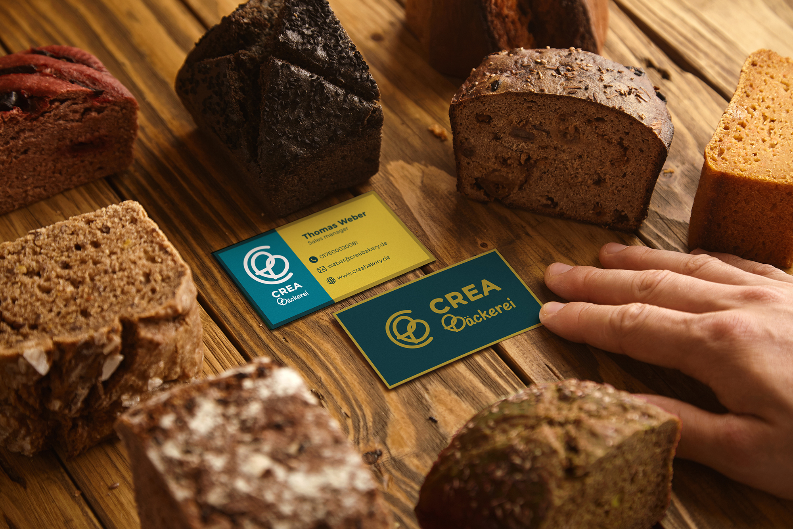
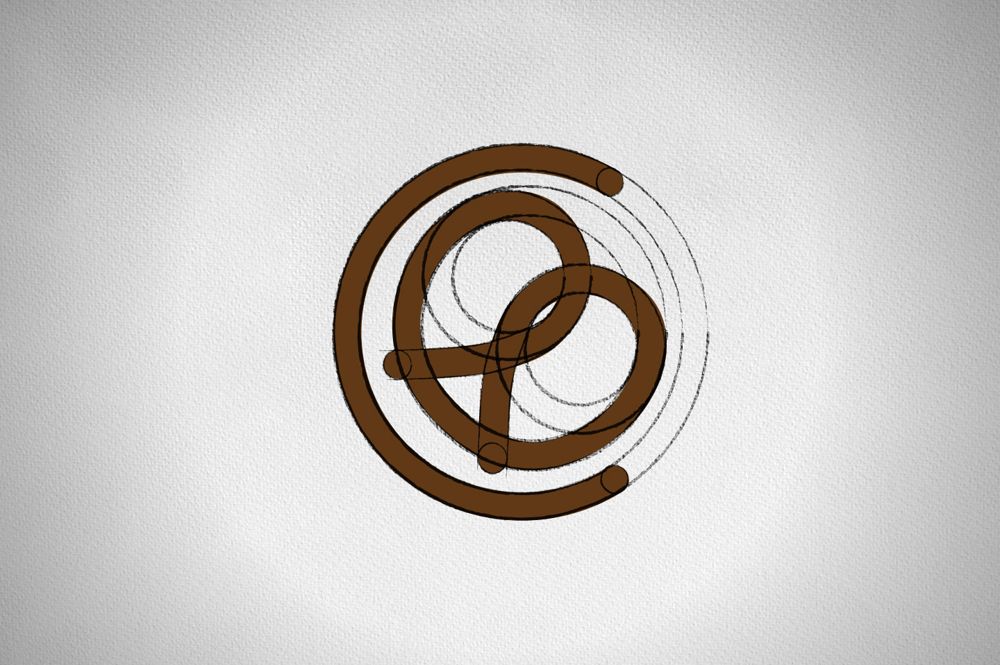
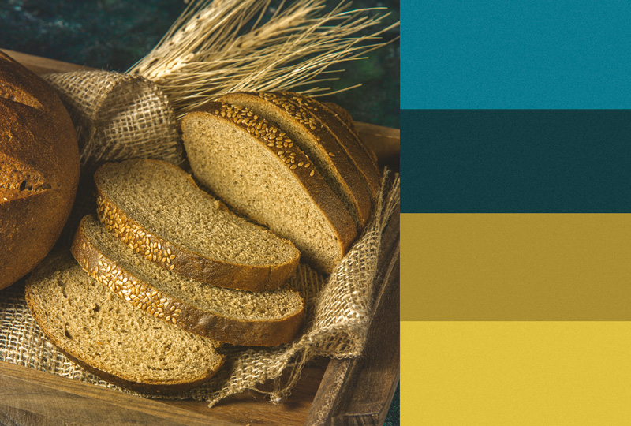
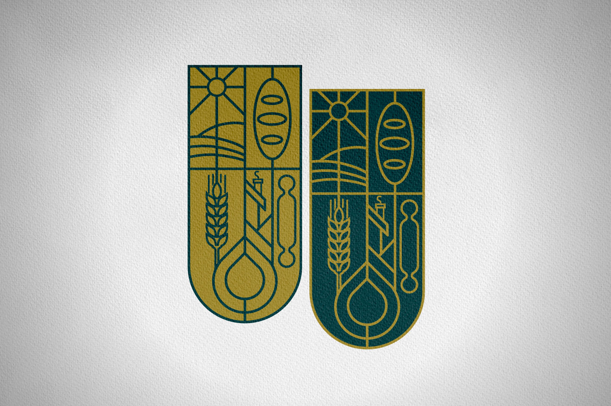
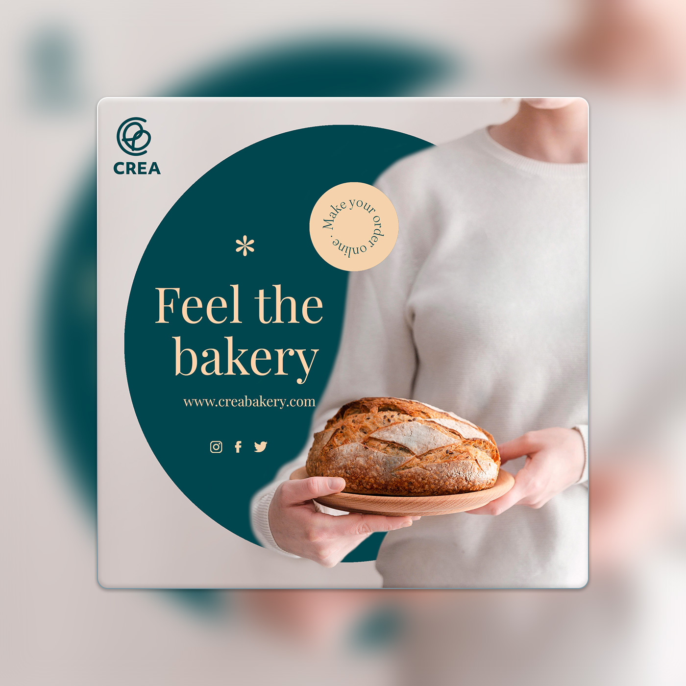
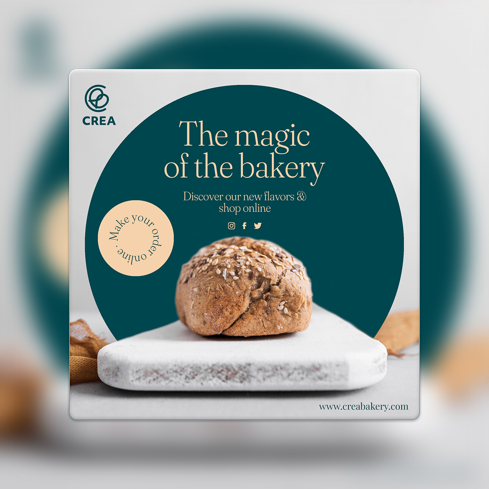

Crea Bakery

The brand had to stand out at street level while staying flexible enough for packaging, social media, and small promotional touchpoints. Everything needed to feel cohesive, clear, and instantly recognizable—even at a glance.


I developed a warm and approachable identity built around a friendly logomark and wordmark system. From there, I defined a color palette, typography set, and photographic direction to establish a consistent tone across all touchpoints. The system was then applied across storefront signage, business cards, packaging, illustrated brand motifs, social media templates, stickers, and opening invitations. All assets were prepared as vendor-ready files, supported by simple brand guidelines to ensure consistency during rollout.




A cohesive visual identity that helped build early awareness before opening day. The bakery gained strong local recognition, increased social engagement, and early foot traffic driven by a clear and inviting brand presence.


Warmth is not a style. It's a decision made at every touchpoint.
This project reinforced how much impact a simple, well-structured system can have for small businesses. If revisited, I’d introduce early real-world testing—such as pop-ups or mock storefront signage—to evaluate scale and visibility before final production.
- Category
- Brand Identity
- Year
- 2022